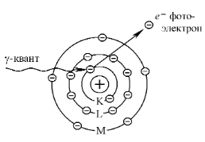
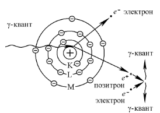

Релаксационными колебаниями называются периодически повторяющиеся процессы сравнительно медленного накопления энергии
колебательной системой и последующего быстрого ее рассеяния. Эти колебания являются одним из видов автоколебаний и могут
происходить как в механических, так и в электрических системах. Электрические релаксационные колебания осуществляются с
помощью различного типа генераторов. В данной работе используется простейший генератор релаксационных колебаний на
газоразрядной лампе (тиратрон МТХ 90).
Зависимость силы тока I от напряжения U для газоразрядной лампы характеризуется рядом особенностей (рис. 1).
1.
Газовый промежуток лампы становится проводящим
только при определенном напряжении Uз на электродах, которое называется напряжением зажигания разряда в лампе.
При этом напряжении электроны, которые всегда содержатся в незначительном количестве в газе (их концентрация ∼102
− 103 см−3), на длине свободного пробега приобретают под действием электрического поля кинетическую энергию
$${mv^2\over 2} = eU,$$ достаточную для ударной ионизации молекул газа.
Вследствие ионизации число носителей заряда (электронов и ионов) в газовом промежутке резко увеличивается и сила тока в лампе скачком
возрастает до значения Iз. Величина Uз зависит от расстояния между электродами и их формы, а так же от давления
газа и других факторов. По мере дальнейшего увеличения напряжения сила тока возрастает по закону, близкому к линейному. Так как процесс
ионизации сопровождается возбуждением атомов, то при прохождении тока через лампу наблюдается свечение газа. С понижением напряжения
сила тока уменьшается также по закону, близкому к линейному. Разряд в лампе продолжает существовать и при напряжении U < Uз,
так как при этих условиях еще поддерживается процесс генерации носителей заряда. Когда разность потенциалов на лампе становится равной
Uг, разряд в лампе прекращается и сила тока в лампе падает скачком от Iг до нуля. Разность потенциалов Uг
называют напряжением гашения. Это напряжение существенно меньше Uз.
2. 
Рассмотрим процесс зарядки конденсатора с емкостью С от
источника постоянного напряжения U0 через резистор с сопротивлением R (рис. 2) после замыкания ключа К. Согласно второму правилу
Кирхгофа, для произвольного момента времени t получим: $${U_R(t) + U_C(t)} = U_0$$
Напряжение на резисторе UR = IR. Сила тока $$I = {dq\over dt} = C{dU_C\over dt},$$где q−заряд на обкладке конденсатора, а UC−напряжение на конденсаторе.
Тогда $$U_R = RC{dU_C\over dt}$$ и уравнение выше примет вид: $$RC{dU_C\over dt} = {U_0 - U_C} ⇒ {dU_C \over U_0 - U_C} = {dt\over RC}.$$
Используя начальные условия (UC = 0 при t = 0), проинтегрируем предыдущее уравнение в пределах от 0 до UС иот 0 до t:
$$\int_0^{U_C} {dU_C \over U_0 - U_C} = {1 \over RC} \int_0^t dt ⇒ U_C = U_0(1 - e^{1\over RC})$$
3. 
Из выражения следует, что напряжение UС на конденсаторе, увеличиваясь со временем t по экспоненциальному закону,
асимптотически приближается к напряжению U0 источника (на рис. 3 этому процессу соответствует кривая 0abc). Причем нарастание
UС происходит тем быстрее, чем меньше величина RC (τ = RC − время релаксации напряжения UC, его обычно называют постоянной времени).
Если конденсатор зарядить до разности потенциалов U0 , а затем замкнуть его на резистор сопротивлением R, то напряжение на
нем со временем будет уменьшаться также по экспоненциальному закону (кривая cde на рис. 3).
4. 
В рассмотренную выше цепь параллельно конденсатору включим газоразрядную лампу с внутренним сопротивлением R1 (рис. 4). Предположим, что конденсатор предварительно
разряжен. Сопротивление лампы до момента tз зажигания в ней разряда очень велико, и ток через нее практически не проходит.
Поэтому напряжение UС на конденсаторе, а следовательно, и на электродах лампы будет сравнительно медленно увеличиваться согласно
кривой 0b (рис. 3). Как только UС станет равным напряжению зажигания Uз лампы, ее сопротивление резко уменьшится и начнется
быстрая разрядка конденсатора (кривая bb1). В следствие этого напряжение на нем понижается. Когда UС снизится до напряжения гашения
Uг, ток через лампу опять перестанет проходить и конденсатор вновь начнет заряжаться. Рассмотренные процессы будут периодически
повторяться. Таким образом, возникают электрические колебания, которые в данном случае представляют собой совокупность периодически повторяющихся
процессов зарядки и разрядки конденсатора. Такие колебания и называются релаксационными. Разрядная лампа является своеобразным ключом, обеспечивающим
повторяющиеся процессы накопления энергии конденсатора и ее рассеяния в разрядном промежутке лампы. В рассмотренной схеме генератора амплитуда
возникающих пилообразных колебаний равна Uз−Uг.
Для возникновения и поддержания релаксационных колебаний в генераторе необходимо выполнение определенных условий (условий
самовозбуждения). Первое условие U0 > Uз является очевидным, так как при его выполнении обеспечивается
зажигание разряда в лампе. Второе условие накладывает ограничение на величину сопротивления R зарядного резистора.
Получим расчетную формулу для критического зарядного сопротивления Rкр, при котором релаксационные колебания перестают
возбуждаться. Для этого рассмотрим процесс разрядки конденсатора, начиная с момента времени tb (рис. 3).
Согласно первому правилу Кирхгофа: $${I_0 = I_C + I_1},$$ где $$I_C = C{dU_C \over dt}$$ - ток зарядки конденсатора;
$$I_1 = {U_C \over R_1}$$ − ток, протекающий через лампу; $$I_0 = {U_0 - U_C \over R}$$ − ток источника питания.
Подставив выражения для сил токов в соотношение, получим дифференциальное уравнение относительно напряжения UC:
$${U_0 - U_C \over R} = C{dU_C \over dt} + {U_C \over R_1}$$
Разделив переменные и проинтегрировав это уравнение с использованием начального условия UС = Uз при t = tb, получим
$$U_C = U_Зe^{-{1 \over C}({1 \over R} + {1 \over R_1})(t - t_b)} + U_0{R_1 \over R_1 + R}[1 - e^{-{1 \over C}({1 \over R} + {1 \over R_1})(t - t_b)}]$$
Первое слагаемое в формуле описывает уменьшение напряжения на конденсаторе С в процессе его разрядки, начиная с момента времени tb.
Второе слагаемое описывает подзарядку конденсатора от источника питания по время протекания разряда в лампе. Если скорости разрядки и зарядки
конденсатора одинаковы, то напряжение на конденсаторе будет постоянным, т.е. $${dU_C \over dt} = 0$$
а ток, протекающий через зарядное сопротивление R, будет равен току, протекающему через лампу, т.е. I0 = I1.
Продифференцировав выражение по времени и приравняв производную к нулю, получим
$$U_З - U_0{R_1 \over R + R_1} = 0 ⇒ R = R_{кр} = {U_0 - U_З \over U_З}R_1.$$
Формула определяет величину критического сопротивления Rкр, при котором релаксационные колебания не возбуждаются, т.е. UC
= const, и лампа горит непрерывно (I1 = I0). Сопротивление R1 лампы определяется по тангенсу угла α наклона
вольтамперной характеристики I = U / R1 (см. рис. 1):
$$tg\alpha = {1 \over R_1} ⇒ R_1 = {U_З - U_Г \over I_З - I_Г}$$
Подставив это выражение в формулу выше, получим выражение для критического зарядного сопротивления:
$$R_{кр} = {(U_0 - U_З)\over U_З}{(U_З - U_)\over (I_З - I_Г)}$$
Величина R > Rкр обычно выбирается достаточно большой, чтобы постоянная времени τ = RC существенно превышала
характерное время разрядки τг конденсатора через лампу (τ >> τг). Для таких условий период Т релаксационных
колебаний (Т = τз + τг) практически равен времени τab зарядки конденсатора до напряжения Uз,
начиная с момента времени, при котором UС = Uг (рис. 3).
Выведем формулу для расчета периода Т релаксационных колебаний. Для этого в выражение подставим сначала напряжение U = Uг
и время t = ta для точки а, затем напряжение U = Uз и время t = tb для точки b (рис. 3). В результате
для промежутка времени τab = tb−ta получим:
$$\tau_{ab} = \tau_c \approx T = RC \ln{U_0 - U_Г \over U_0 - U_З}$$
Схема установки изображена на рис. 5. В состав установки входят набор кассет ФПЭ − магазин емкостей С, магазин сопротивлений R,
генератор на тиратроне Т и источник питания ИП, выходное напряжение которого регулируется. Двухпозиционный переключатель ПК
обеспечивает возможность включения в схему миллиамперметра mA или магазина сопротивлений R. Положение 1 переключателя используется для
построения вольтамперной характеристики тиратрона, положение 2 − для получения релаксационных колебаний. Магазин емкостей включается в
цепь кнопочным переключателем К на кассете ФПЭ. Для защиты тиратрона от перегрузки по току последовательно с ним постоянно включено
добавочное сопротивление r. Для наблюдения релаксационных колебаний и измерения их периода используется осциллограф, на вход Y
которого подается напряжение между точками A и B.
5. 
В положении 2 переключателя ПК напряжение на тиратрон Т и конденсатор С подается через сопротивление магазина R. Когда напряжение на
конденсаторе достигает напряжения зажигания Uз, возникает электрический разряд в тиратроне, его сопротивление резко
уменьшается и конденсатор С разряжается через тиратрон и добавочное сопротивление r. При снижении напряжения на конденсаторе до
значения напряжения гашения Uг разряд в тиратроне прекращается и снова начинается процесс зарядки конденсатора.
Таким образом, напряжение между точками A и B цепи периодически нарастает и спадает, т.е. в цепи возникают релаксационные колебания.
Они обусловлены периодическими процессами зарядки и разрядки конденсатора, который осуществляется зажиганием и прерыванием разряда в
тиратроне.